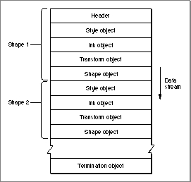
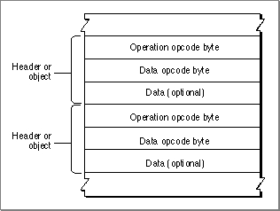

Stream Design
The data stream includes type constants called opcodes that specify the meaning of the data that follows in the data stream and record size values that indicate the number of bytes in the record that follow.Each QuickDraw GX data stream starts with a header. The header contains the version of QuickDraw GX that produced the stream and flags that describe whether or not a list of fonts and a list of glyphs used by the objects are provided for at the end of the stream. This header is typically followed by the style object, ink object, transform object, and shape object for the shape. This sequence is repeated for all subsequent shapes in the data stream. The data stream is terminated after the last shape by the presence of a termination object, as shown in Figure 7-1.
Figure 7-1 A typical flattened shape data stream sequence

Each header and object type in the data stream is counted. This results in the assignment of reference numbers for headers and all object types, such as style, ink, and transform objects. The reference number is the nth occurrence of a header or object type.
For example, each data stream always has a header (1), a typically a style object (1), ink object (1), transform object (1), and shape object (1), where the references are given in parentheses. Additional headers and object types in the data stream are assigned the next incremental reference number. Figure 7-1 shows that shape 1 is defined by style object (1), ink object (1), transform object (1), and shape object (1) and that shape 2 is defined by style object (2), ink object (2), transform object (2), and shape object (2). shape 100 in this data stream (not shown) may use the ink object defined in shape 1 by referencing ink object (1).
Besides the style, ink, transform, and shape objects, the data stream may also contain additional objects. The following objects are flattened when referenced by shapes, inks, and transforms:
Examples of other referenced objects are the shapes that represent clips, dashes, and the styles and transforms in text faces.
- tag
- color set
- color profile
- other referenced objects
The following objects are never flattened:
Another rule regarding data stream design requires that all objects and their attributes in the data stream must be defined before they are referenced. QuickDraw GX data streams never forward-reference objects.
- view ports
- view devices
- view groups
For example, the style, ink, and transform objects for a shape must always precede the shape object that they describe in the data stream. In addition, if a style object has a text face property and the text face property has a dash property, then the shape object for the dash property must precede the style object in the data stream.
The data stream design does not require that the order of objects to be style, ink, and transform. Because these objects do not reference each other, they can appear in any order in the data stream, as long as they are defined prior to being referenced.
Each header and object in the data stream consists of an operation opcode byte, a data type opcode byte, and optional data bytes. Figure 7-2 shows these basic data stream format building blocks. This sequence is repeated from the beginning of the stream to the end of the stream. The next sections describe each of these building blocks.
Figure 7-2 Basic components of a stream header or object
